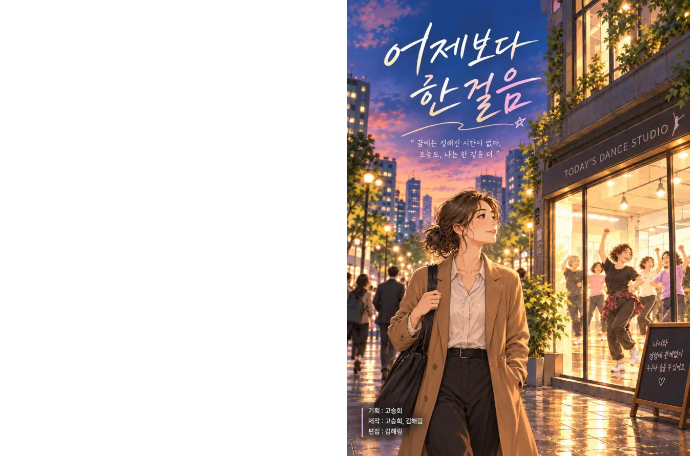
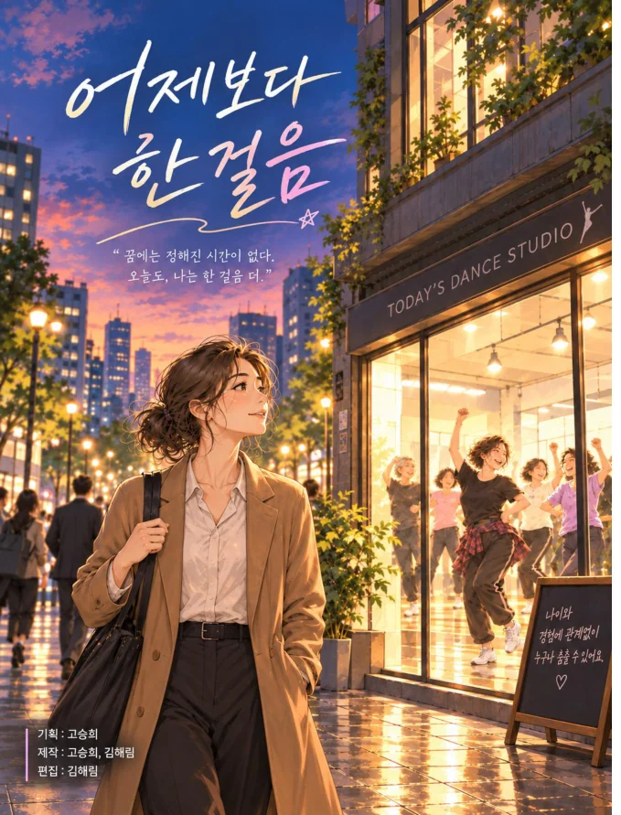
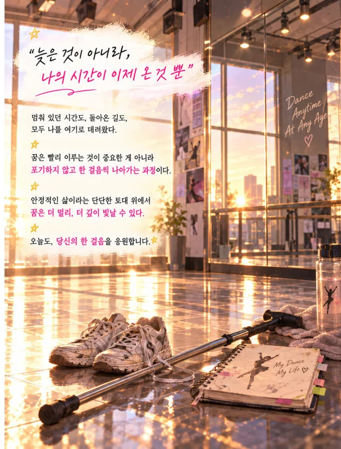

스토리 기획
‘꿈을 이루는 데 정해진 시간은 없다’는 핵심 메시지를 정하고, 성인 독자가 공감할 수 있는 이야기의 흐름을 기획했습니다.

꿈을 이루는 데 정해진 시간은 없다는 메시지를 전하는 성인을 위한 AI 동화책.
《어제보다 한 걸음》은 ‘꿈을 이루는 데 정해진 시간은 없다’는 메시지를 전하기 위해 기획한 성인용 동화책입니다. 꿈을 시작하기에 늦었다고 느끼는 어른들에게, 남과 비교하는 속도보다 자신만의 한 걸음이 중요하다는 이야기를 따뜻한 일러스트로 전하고자 했습니다.
기획 의도: 꿈을 이루는 데 정해진 시간은 없습니다. 지금 시작하는 한 걸음도 충분히 의미 있습니다.
표지부터 마지막 장면까지, 실제 책의 흐름을 PDF로 감상할 수 있습니다. 총 13페이지 PDF이며 본문은 양쪽 펼침으로 편집되어 있습니다.

화살표 버튼, 키보드 ← → 또는 책 이미지를 눌러 부드럽게 전환해 보세요. 본문은 펼침면 단위로 표시됩니다.
장면을 누르면 해당 쪽부터 읽을 수 있어요.
‘꿈을 이루는 데 정해진 시간은 없다’는 핵심 메시지를 정하고, 성인 독자가 공감할 수 있는 이야기의 흐름을 기획했습니다.
캐릭터의 일관성, 도시 배경, 조명과 색감을 정하고 장면마다 시선의 흐름을 구성합니다.
AI 이미지 생성 결과를 검토하고 장면 구성, 텍스트 배치, 페이지 리듬을 조정해 책으로 완성합니다.
스토리 기획 → 캐릭터 시트 제작 → 이미지 생성 및 장면별 일관성 검토 → 페이지 구성 → 최종 편집
동화책 속 인물의 외형과 감정 표현이 장면마다 자연스럽게 이어지도록, 이미지 제작에 앞서 주요 등장인물의 캐릭터 시트(Character Sheet)를 작성했습니다. 인물의 정면·측면·후면, 다양한 표정과 포즈, 의상 및 세부 특징을 정리해 시각적 기준을 마련했습니다.
캐릭터 시트를 클릭하면 크게 볼 수 있습니다. 장면마다 캐릭터의 외형과 감정 표현을 일관되게 유지하기 위한 제작 자료입니다.
동화책의 스토리 기획과 이미지 제작에 ChatGPT를 사용했습니다.


성인용 동화책 《어제보다 한 걸음》의 최종 결과물입니다. 위 PDF 뷰어에서 책 전체를 읽거나 별도 창에서 확대해 감상할 수 있습니다.